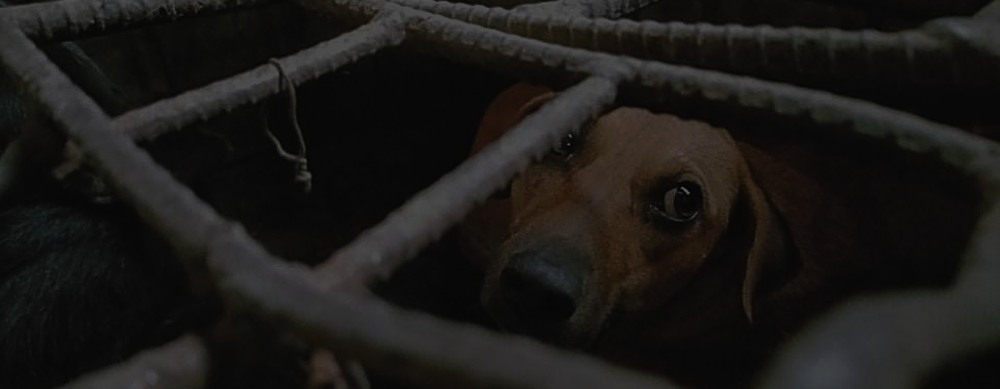

Cel +63 939-914-2403 │
akfanimalrescue@gmail.com │
Barangay Cubcub, Capas, Tarlac
BE ONE OF US.
Home
About Us
What We Do
Our Campaigns
End The Dog Meat Trade
Cage Free, Go Cruel Free!
Better Fish, Tomorrow!
Our People
Future Events
What
We Do
We respond to the concerns of animals in order to improve their well-being.
We are highly committed in saving animal's lives through advocacy, animal placement and animal protection programs along with hands-on help
at the AKF home. Through these programs, we have also built a community of volunteers and advocates to save thousands of lives.
What We Do
What We Do
Rescuing Animals
AKF personnel risk life and limb catching the dog-traders to save distressed dogs in the Philippines. Together with the Philippine National
Police (PNP), the National Meat Inspection Service (NMIS), and the Local Government Units (LGUs) when needed raiding establishments involved in dog trading and selling
of its meat. Initially, investigations take weeks or even month. Upon verification of information, AKF Coordinates with the concerned agency prior to carrying out
operations. Then, the rescued animals are brought to the AKF rescue center in Capas, Tarlac.
From investigation, rescue, and prosecution of the dog
meat traders, to the care and rehabilitation of the rescued
animals in the AKF rescue center. All the team's efforts finally
culminate to the adoption of the rescues- a happy ending that
each staff are hoping to achieve in every rescue.
Animal Welfare
Protection
This Is Our Mission
What We Do
Rescue
We save the unfortunate dogs from the
hands of dog meat traders and
immediately relieve the animals
from their situation.
Rehabilitate
We tend to the health and medical needs
of our rescues to ease their recovery
and to prepare them for rehoming.
Rehome
Upon their full recovery, we look for a
home and family for our rescues
to give them belly rubs and love
them everyday.
Our
Programs
Project SNAP
Our Spay, Neuter and Adopt Program with
veterinary embodies AKF’s mission in making
veterinary care more accessible to the
underprivileged pet owners. AKF believes
that SNAP offers a solution to the dogs and cats’
overpopulation. This collaboration with other
agencies and groups is held in various
communities that badly needs animal care.
We Feed as One
We Feed as One was initiated because of the
lockdown due to the COVID-19 pandemic.
AKF had to find a way to go out and feed the
strays, source out animal food, and help some
struggling shelters. We also collaborated with
other volunteer teams to cover more areas
during the pandemic.
P.E.P.
(Pet Education Program)
Gearing towards our vision of a nation that is
compassionate, responsible, respectful, and loving towards
animals , AKF reaches out to different schools, barangays,
and universities to educate the youth about responsible
pet ownership, rabies and bite prevention, animal welfare,
and more.
Lobbying
AKF works hand in hand with various government
agencies, organizations, and stakeholders in crafting and amending laws which aim to safeguard the welfare of animals making for a more animal-friendly environment.
Disaster Response
Natural calamities, sometimes man-made tragedies like the
Marawi siege, and other widespread disasters can displace
and starve animals or gravely endanger them. AKF has
initiated quick responses duringthe Mayon and Taal volcano
eruption, flooding, typhoons, and others by providing
veterinary attentions, feeding and rescue of the
affected animals while also providing immediate
shelter to gravely injured ones.

If not now, when?
They need your help!
Take part in our endeavors to give the love that they deserve and improve
their living conditions.
 akfanimalrescue@gmail.com │
akfanimalrescue@gmail.com │
 Barangay Cubcub, Capas, Tarlac
Barangay Cubcub, Capas, Tarlac